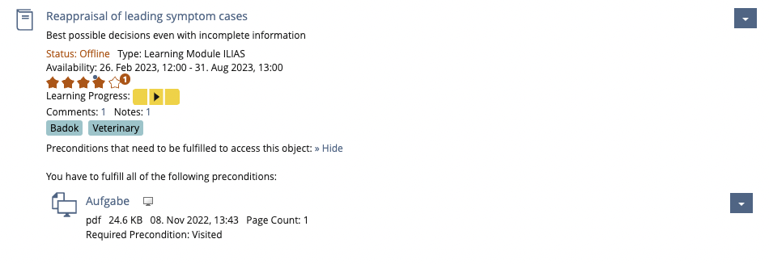
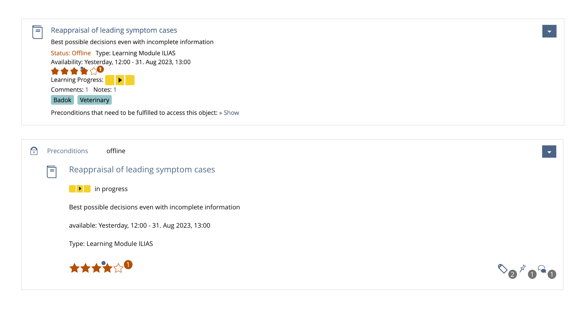
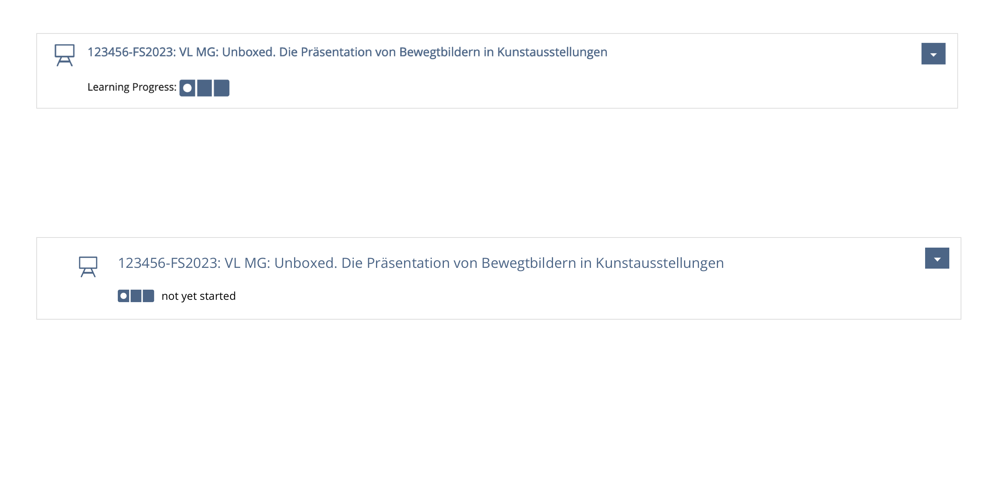
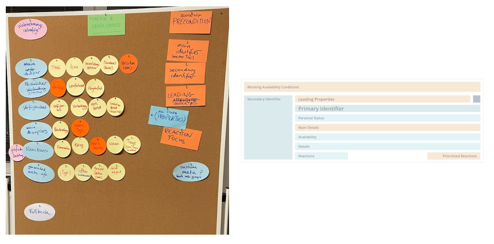
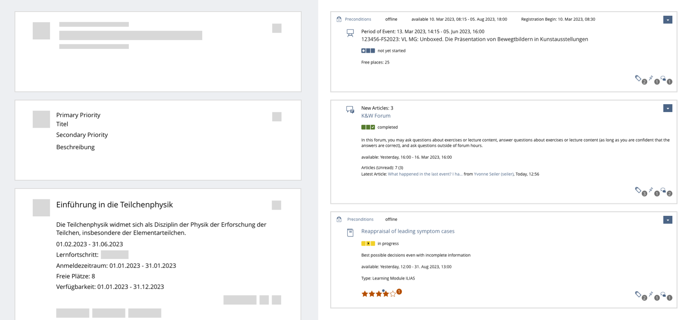
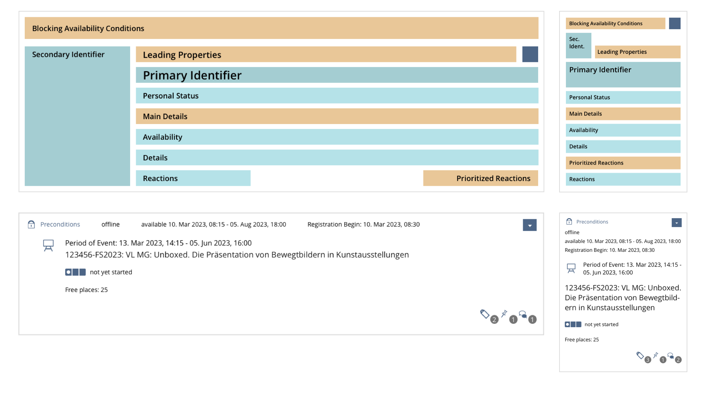
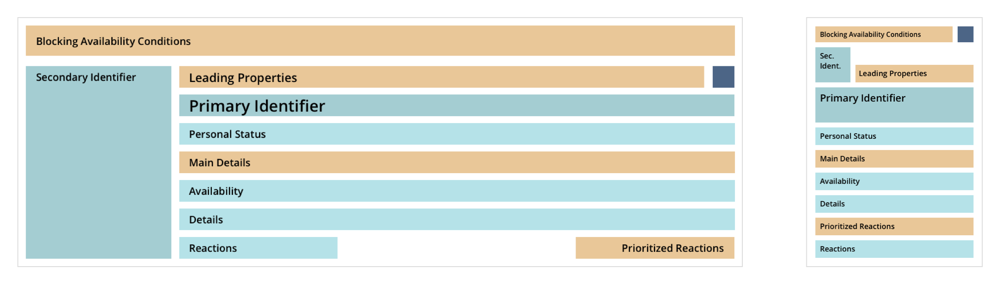
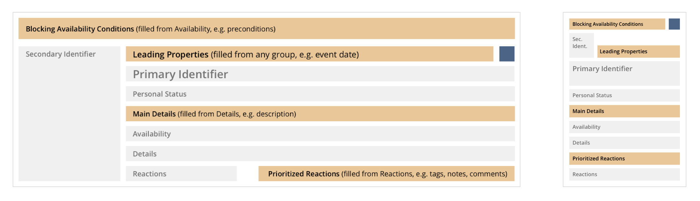
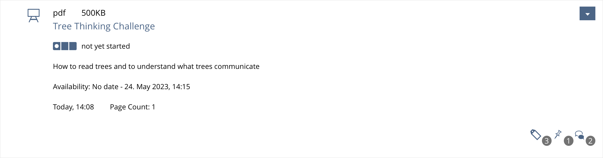

Bringing Order to Chaos
Object Properties
The challenge
So many properties on an object

- the title
- a description
- a variety of dates and deadlines
- icons
- a learning progress
- tags
- comments
- previews
- and much more…
Properties can pile up…
…so let’s try grouping and sorting…
…and see what changes.
Example 1: Why can’t I register?

Example 2: Anything new?

Example 3: User interaction?

Minimal items barely change

Why look into this now?
Repository is switching from legacy components to UI components
The approach to find groupings
Considering User Intent
- most of the time the user is not an admin, but a learner
UX Guide for Repository Object Properties
General User Intents
- Managing multiple objects
- Making a quick pick
- admin: wants to see all properties for managing and sorting
- normal user (learner): trying to find something quickly
Making a quick pick
- one clear choice for one expected object
- glancing at one or two of its properties
- action shown as the most prominent usually the reason why user came to this view
Workshop
Collection of possible properties
- Very helpful tables in FR Streamline Object Properties
- such collections often focus on data types
Property Types vs Semantic Group
- Type: Date
- Possibly different Semantic Groups:
- Event Date
- Registration
- Availability
- Deadline
Finding the Semantic Groups
- Which properties belong together for the most optimal fulfillment of the user intent?
- same kind of information close together
- user learns default order and position
- hypothesis -> argumentation -> rearrangement OR acceptance (repeat)

- find and recognize relevant information increase effectiveness and satisfaction
- but we have so much properties in one semantic group
what can we do?
Priority Areas
- make important information jump out visually
- e.g. user can’t open a course, would immediately like to know why
- really quick decisions become possible (leading properties)
Testing with Mockups
- How about other objects like file, exercise, forum, group?

Feedback and Tweaking
- Are the semantic groups sufficiently differentiated from each other?
- Have different workflows been run through (e.g. what happens if a property is not available)?
- How do the groups arrange themselves on different screen sizes? (large, small)

- Is the system flexible enough? (further developments)
Conclusion
- What can we do to help the user make a decision quickly based on the properties on an item?
- Semantic Groups
- Priority Areas
- Leading Properties



Leading Properties
- makes meeting different user expectations possible
- for courses: event date
- for files: file type and size
- there are good reasons for it, but not mandatory
- exact logic has to be developed case by case

Coding
- just rough thoughts, examples and ideas
- implementation details are yet to be determined
current UI Item
- all properties as a listing into “withProperties”
the proposes UI Repository Item
- properties have to be sorted into the Semantic Groups
- logic for Priority Areas is optional
- we would like to offer making suggestions for leading properties and main details
- Collections for the Semantic Groups
- PrimaryIdentifier
- SecondaryIdentifier
- inGroupPersonalStatus
- inGroupAvailability
- inGroupDetails
- inGroupReaction
- priority areas could pull from these groups
$crs_item = f('title', 'icon') //define primary and secondary identifier during construction
->inGroupPersonalStatus('progress', 'membership')
->inGroupAvailability('availabilitydate', 'seats', 'preconditions')
->withBlockingAvailabilityCondition('preconditions')
->inGroupDetails('eventdate', 'description')
->withLeadingProperty('eventdate')
HTML DOM
- flat hierarchy
- DOM order = accessible screen reader order
- Re-ordering with CSS grid or flexbox = best order and weighting for seeing users
Semantic Grouping brings more opportunities
- on other UI components, views and sidebars?
- filter by group?
Outlook UI Repository item
- Repository object MUST be replaced by UI Item soon
- Finalizing design suggestion for Delos
- Finalizing PR -> Discussion/Refinement -> Implementation of UI Repository Item in KS
- FR Transfer Repository Objects to KS Items